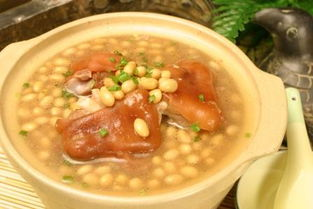

第五版
第五版

当炎热褪去，一股凉气袭来，秋早已在960万平方公里的土地上留下了遍地的痕迹：不论是内蒙古阿尔山上的大片草原，还是吉林蛟河的红叶谷，抑或是南京栖霞山古寺，红的，黄的，铺天盖地地填补着，要把这广阔的大地染个金黄。人间的烟火气在秋季凉爽气候的烘托下，显得愈发浓重了起来。
一碗浓郁的黄豆猪蹄汤是秋天最好的补品，猪蹄的软糯在汤汁的收煨下沁着黄豆和枸杞的清香，是所有爱喝汤的南方人绝不会放过的秋日美食。炖汤的猪蹄一定要加入清水、姜片煮沸，好好地去一去腥味方才可食用，一来是为了口感，二来也是对得起秋日的爽朗。
“安知南山桂，绿叶垂芳根。”桂花，在南方人人的嘴里吃出了千百种花样。桂花的清香不管是搭上了什么，都仿佛有了秋天的味道。桂花糕，一道从老祖宗那传下来的点心，经历了300年风风雨雨，萦绕在口齿心间的清香却不曾消失。桂花糕洁白如玉、清甜爽口，若是面案师傅心灵手巧，桂花糕可以精致得像个待嫁闺中的可人儿，我见犹怜，拿起来不忍，放下去不舍。
“没有一只鸭子可以活着游过南京。”这是坊间对南京的打趣儿，在这里，桂花和鸭子在舌尖发生了奇妙的反应。桂花鸭，南京著名的小吃。桂花鸭的名字不仅指有鸭、有桂花，还是因为最好吃的鸭子在桂花盛开制作。光鸭擦盐，置于“井”字竹架上，架下砂锅里放这用料酒和桂花调匀的小碗，旺火蒸煮，小火慢炖，直至香气扑鼻。鸭肉外酥内嫩，桂花的熏陶使得肉质香而不膻、鲜嫩多汁，一口咬下去汤汁顺着喉头流进胃里，再冷的秋天也有了慰藉。
生活在魔都里的人，不论有多忙，在秋天也要醉在桂花酒里。桂花酒和秋天一样 金黄的颜色。每斤桂花四两白糖，放入酒坛发酵两到三天，加入米酒或高粱酒，密封窖藏，一年后桂花酒即成。颇有讲究的上海人是要追求顶级家酿的，桂圆肉、白参、红枣加了进去才是生活的有滋有味。
北方的秋天似乎更加硬朗些，但是乐观的北方人擅长苦中作乐。直爽开朗的河北迁西人，在秋天，斗笠手里总得攥着几个糖炒栗子才算得劲儿。迁西人在吃板栗庄重的眼神，像是开箱一份秋天的礼物，咔嚓一捏，一股热气从小巧的板栗壳烟烟袅袅地飘出，像孙悟空变了个戏法似的俏皮，倒也符合河北人的幽默。
在粗犷的草原上，游牧民族的幸福来源于秋天的一顿烤全羊。风味肉质食品总是色、香、味俱全，这种从石器时代就传下来的烹饪方式有着独特的魅力。从烤炉里出来的羊肉，色泽黄红、油亮，皮脆肉嫩，香酥可口，用手撕开来，可以清晰地看到肉质纤维的分离，吃进嘴里去，是口感分明的软糯，肉质丝丝分离却浑然一体。秋风拂过辽阔的草原，到处飘扬着烟火的气息。
说完今朝，再看往昔。古人是最讲究吃的，所谓王公贵族讲究“礼有以多为贵者，天子之豆二十有六，诸公十有六，诸侯十有二，上大夫八，下大夫六。”而民间平民的饮食之礼则“乡饮酒之礼，六十者三豆，七十者四豆，八十者五豆，九十者六豆，所以明养老也”。吃往往与礼联系紧密，因而在吃上古人往往更加追求情趣雅致。就拿《红楼梦》来说，第三十八回《林潇湘魁夺菊花诗，薛蘅芜讽和螃蟹咏》中，吃蟹、饮酒、赏菊和赋诗混融一体，其中对吃蟹的描写更是让人垂涎欲滴，“螯封嫩玉双双满，壳凸红脂块块香。多肉更怜卿八足，助情谁劝我千觞。
”几句足足写出了螃蟹的肥美鲜香，真真是把吃蟹捧成了神仙才能干的事。那么古人是如何吃蟹的呢？从“持螯更喜桂阴凉，泼醋擂姜兴欲狂。”中不难看出，吃蟹的最好时节莫过于是桂花金秋时节，而吃蟹的最佳伴侣便是蟹醋。《红楼梦》中的姐们哥们深知吃蟹的第一步是辨雌雄，遂有团脐和尖脐之分。白肚朝上，蟹脐呈半圆型的称“团脐”，为雌蟹，“尖脐”便是雄蟹。而就节气而论，民俗常说“九月团脐十月尖，持螯饮酒菊花天”。在古人的观念里螃蟹寒凉不宜多食。“脐间积冷馋忘忌” 以致黛玉夹了几筷子便不再多吃。由此对螃蟹的制法本身亦提出了许多要求。自古以来，南北异质，南方多用清蒸，北方当数水煮，还有煎炒面拖、醉制，不一而足。吃蟹时候的准备工作也马虎不得，剥蟹不经他人之手，而在食蟹结束后“澡手”，要用菊花叶、桂花蕊熏的绿豆面儿，可以去除腥味，所谓“指上沾腥洗尚香”。
忆往昔，看今朝，人们对于秋季美食的享受从不曾马虎，再苦再累的日子只要有了口吃食，都过的下去。
古往今来，日月更替，在四季流转的土地上，孕育出四季分明的饮食文化，在这风味流转的人间，不变的始终是人们对于生活的热爱。